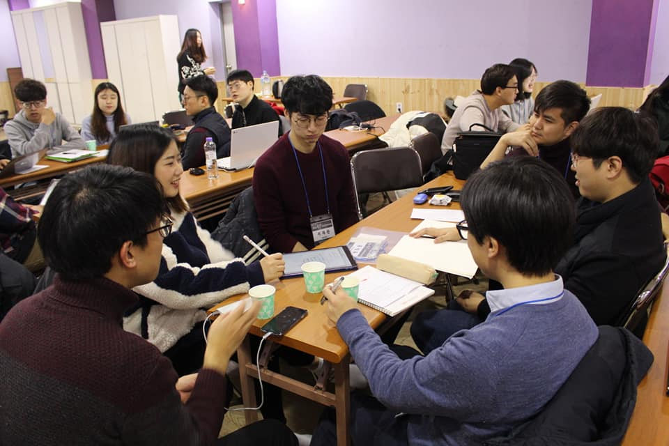
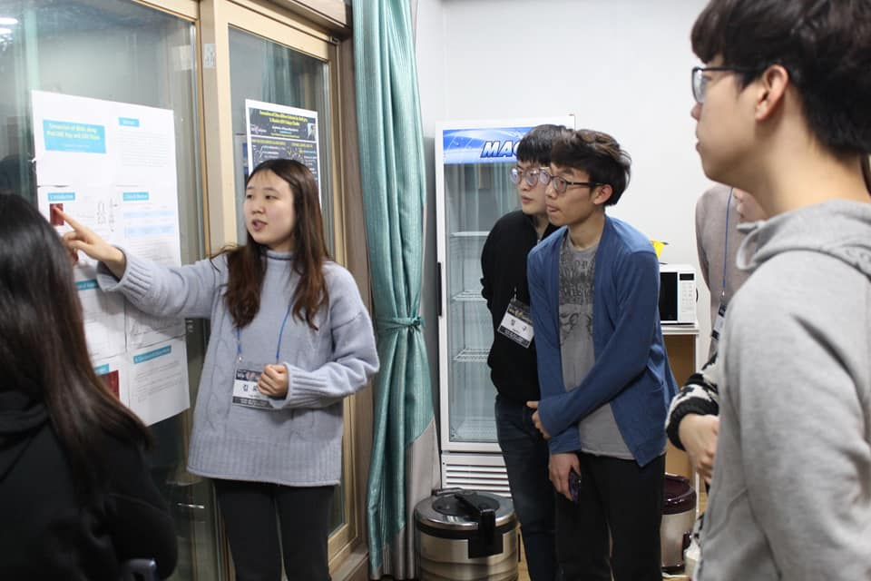
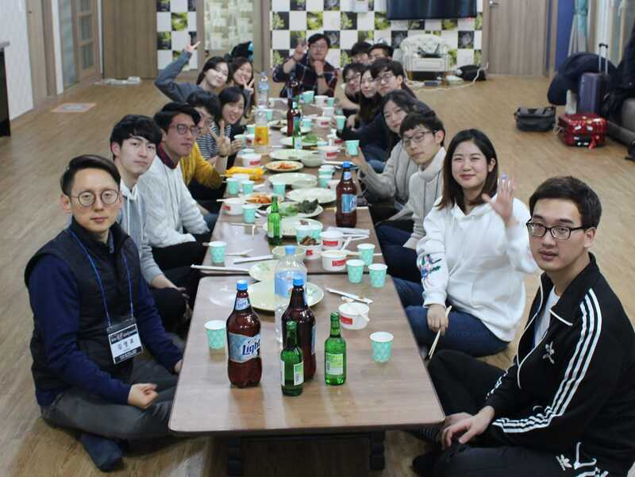
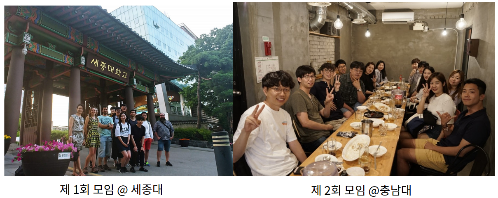

1. Workshop
The YAM Workshop, much like a group retreat, is held roughly once a year. In a relaxed and friendly atmosphere, members from different universities get to know each other, present their research posters, and engage in scholarly exchange. Invited talks by external speakers, sharing of graduate-life tips, and discussions on research ethics round out a packed, varied program.





2. General Meeting
The General Meeting is typically held during the KYAM division session at the KAS spring and fall conferences. It welcomes new members, reviews quarterly activities, and elects the next executive team.

3. YAM! YAM! Let's See Each Other
YAM! YAM! Let's See Each Other is a spontaneous get-together aimed at fostering exchange and fellowship. Beyond the KAS spring/fall meetings and the YAM Workshop, members rarely have a chance to meet in person — this event was started to create more opportunities to spend time together.

4. YAM Colloquium (Yam-madang)
The YAM Colloquium (얌마당 / Yam-madang) is a colloquium series by and for young astronomers, started to energize scholarly exchange among early-career researchers. Peers in the same generation come together to share their research and talk openly about careers and personal experiences.
Why the YAM Colloquium is special:
- Topics that early-career astronomers truly need — ones you wouldn't usually hear at a university or institute colloquium
- An opportunity to publicize one's research and practice presenting
- A relaxed atmosphere where even basic questions are welcome
- Broadens understanding of astronomy topics outside one's own subfield
2026 YAM Colloquia
View past YAM Colloquia (2021–2022, 9 sessions total)
In 2021 the YAM committee launched the YAM Colloquium to revive scholarly exchange disrupted by COVID-19. Nine sessions were held between May 2021 and February 2022.